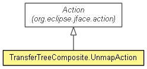

-
-
Field Summary
-
Fields inherited from interface org.eclipse.jface.action.IAction
AS_CHECK_BOX, AS_DROP_DOWN_MENU, AS_PUSH_BUTTON, AS_RADIO_BUTTON, AS_UNSPECIFIED, CHECKED, DESCRIPTION, ENABLED, HANDLED, IMAGE, RESULT, TEXT, TOOL_TIP_TEXT
-
Method Summary
-
Methods inherited from class org.eclipse.jface.action.Action
convertAccelerator, convertAccelerator, findKeyCode, findKeyString, findModifier, findModifierString, getAccelerator, getActionDefinitionId, getDescription, getDisabledImageDescriptor, getHelpListener, getHoverImageDescriptor, getId, getImageDescriptor, getMenuCreator, getStyle, getText, getToolTipText, isChecked, isEnabled, isHandled, notifyResult, removeAcceleratorText, removeMnemonics, runWithEvent, setAccelerator, setActionDefinitionId, setChecked, setDescription, setDisabledImageDescriptor, setEnabled, setHelpListener, setHoverImageDescriptor, setId, setImageDescriptor, setMenuCreator, setText, setToolTipText
-
Methods inherited from class java.lang.Object
clone, equals, finalize, getClass, hashCode, notify, notifyAll, toString, wait, wait, wait
Copyright (c) 2011, 2012 Eike Stepper (Berlin, Germany) and others.